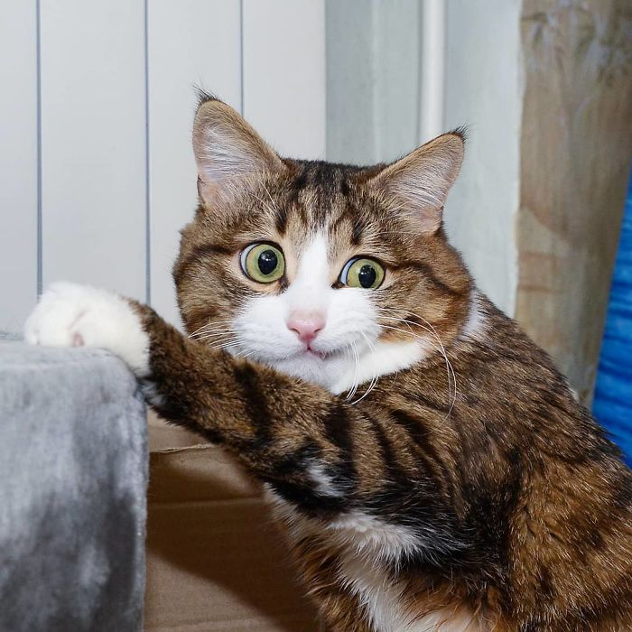

<p>Lobortis potenti urna leo gravida porttitor curae proin placerat tempus consequat lorem, sem dictumst imperdiet mattis velit congue maximus lectus egestas per orci, posuere dis semper varius ante senectus quisque pretium vivamus fringilla.</p>

Rotate